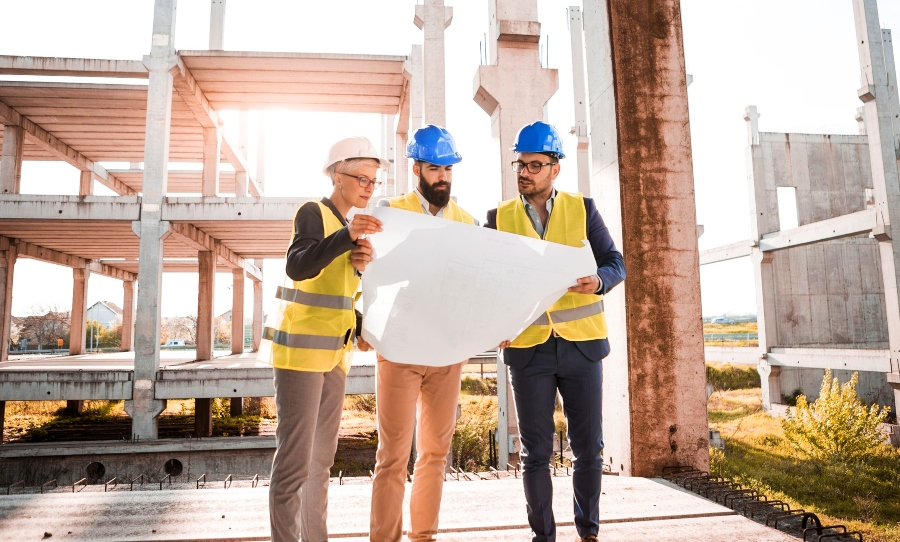

Nuestro Equipo
En un mundo en donde los sueños parecen irrealizables, en la mejor expresión de la arquitectura es posible convertirlos en una realidad concreta, genuina y real. Creemos en la arquitectura como arte y ciencia para crear un marco a nuestra vida. El crecimiento de la firma ArquiWeb coincidió con nuestra visión de perseguir la vanguardia y respetar el carácter funcional, sin perder de vista los deseos de los usuarios. El objetivo proyectual siempre buscó resolver cada problema de un modo simple, creativo y de gran impacto.
En el Año 2008, Arquiweb fue fundado en la Ciudad de Buenos Aires, Argentina. Llevamos proyectados y construidos más de 25.000 m2 en viviendas y edificios Premium que avalan nuestra experiencia.
Nuestra visión y ejercicio internacional, con una fuerte influencia del ´Made in Italy´ en nuestra perspectiva proyectual, nos ha dado reconocimiento nacional e internacional, habiendo ganado concursos como “PREMIO AGA KHAN” en 2010 y 2016, FOA en 2011, ARCHITECT REPORTER en 2012, y PREMIO PRITZKER en 2018 en Polonia.
Con un espíritu sencillo y una visión creativa, nuestro mayor éxito reside en crear espacios que marquen la diferencia y cambien la vida de las personas. Nos destacamos por interpretar las necesidades y sueños de nuestros clientes, plasmándolos en el proyecto que buscan, tanto para su casa, para edificios multifamiliares, locales comerciales. Desde nuestro punto de vista, la arquitectura trasciende la idea del edificio en sí mismo, al reflejar la identidad de quien lo habita y lo siente propio. Nuestro gran desafío no se resume solamente a proyectar un gran diseño o construir con las más altas calidades, sino también que vivan una gran experiencia mientras esto sucede.

PREMIO AGA KHAN
PREMIO AGA KHAN obtenido en el ano 2010 y 2016 en la ciudad de Berlin, Alemania.
Casa FOA
Premio Casa FOA, obtenido en el ano 2011 en la ciudad de Buenos Aires, Argentina.
ARCHITECT REPORTER
ARCHITECT REPORTER obtenido en el ano 2012 en la ciudad de Boston, USA.
PREMIO PRITZKER
PREMIO PRITZKER obtendo en el 2018 en la ciudad de Varsovia, Polonia.